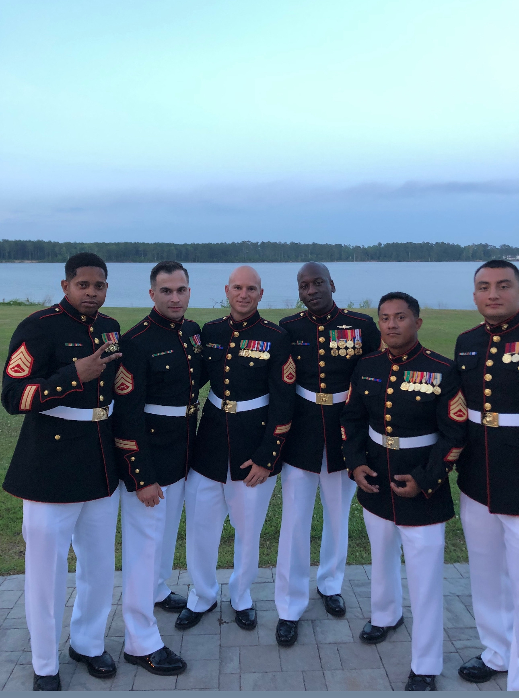

<div class="textcontainer">
<h3>About Me</h3>
<p class="margin"> </p>
<div class="center-row">
<img src="./Bernie.jpg" alt="photo of Bernie" width="25%">
<p id="aboutme">
Hi, my name is Bernie. I am a junior in Eliot concentrating in neruoscience with a secondary in Economics. This is my website where I document my work for PHYSCI 70: Intro to Digital Fabrication.
</p>
</div>
<p class="margin"> </p>
Prior to coming to Harvard I served in the US Marine Special Forces. The US Marines were the last branch to stand up a special forces unit so its a little less known than other units like the Navy Seals. I enjoyed my tiime in the military and attribute alot of who I am today because of the military. I deployed to Iraq twice to combat ISIS and once to Spain in support of U.S embassy security in Africa. My interest in neuroscience came from my desire to find better methods for helping mental health. On my freetime I enjoy photography and DJ'ing. I mostly mix electronic dance music. For photography I shoot digital portraits and street photography. Recently I have found an interest in film photography so I am excited to see where this adventure takes me.
<p class="margin"> </p>
<div class="flexrow">

<img src="./.jpg" alt="" width=25%>
</div>
<p class="margin"></p>
Head on over to my page on [Week 1](./01_intro/index.html) to check out my ideas for my final project!
</div>